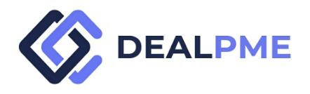

<!doctype html><html lang="fr"><head><meta charset="utf-8"><meta name="viewport" content="width=device-width,initial-scale=1"><title>CNX-01 · Salon agro UEMOA · DealPME V3</title><style>
:root{--navy:#152b58;--navy2:#0f2349;--green:#24b668;--signal:#5f72e5;--paper:#fff;--bg:#eef4f9;--line:#d9e3ee;--ink:#14233f;--text:#4a5a73;--muted:#7c879a;--amber:#b7791f;--red:#b42318;--shadow:0 8px 25px rgba(12,35,73,.08)}*{box-sizing:border-box}body{margin:0;font-family:Inter,Arial,sans-serif;background:var(--bg);color:var(--ink)}button{font:inherit;cursor:pointer}.topnote{background:#fff1d8;color:#795100;text-align:center;padding:8px;font-size:11px;font-weight:800;letter-spacing:.06em}.header{height:72px;background:#fff;border-bottom:1px solid var(--line);display:flex;align-items:center;padding:0 36px;gap:30px}.logo{width:165px}.headtitle{font-size:13px;color:var(--muted);flex:1}.profile{border:1px solid var(--line);border-radius:8px;padding:9px 11px;background:#fff;color:var(--navy);font-weight:750}.hero{background:linear-gradient(118deg,#0d244d,#173b6a 68%,#1c5a62);color:#fff;padding:28px 36px}.hero-in{max-width:1320px;margin:auto;display:grid;grid-template-columns:1.3fr .7fr;gap:28px}.badge{display:inline-flex;background:var(--green);border-radius:5px;padding:6px 9px;font-size:11px;font-weight:900;margin-right:6px}.badge.alt{background:rgba(255,255,255,.12);border:1px solid rgba(255,255,255,.25)}h1{font-size:31px;margin:12px 0 8px}.hero p{color:rgba(255,255,255,.84);line-height:1.55;margin:0}.hero-card{background:rgba(3,17,39,.55);border-left:4px solid var(--green);padding:18px;border-radius:8px}.hero-card strong{font-size:18px}.hero-card small{display:block;margin-top:8px;line-height:1.45;color:rgba(255,255,255,.78)}.tabs{background:#fff;border-bottom:1px solid var(--line);height:60px;display:flex;align-items:end;gap:34px;padding:0 36px;overflow:auto}.tab{height:60px;border:0;background:none;color:#4b5a73;font-weight:800;padding:0 0 15px;border-bottom:3px solid transparent;white-space:nowrap}.tab.active{color:var(--navy);border-color:var(--navy)}.main{max-width:1320px;margin:auto;padding:22px 26px 48px}.grid{display:grid;gap:16px}.grid.two{grid-template-columns:1.15fr .85fr}.grid.three{grid-template-columns:repeat(3,1fr)}.card{background:#fff;border:1px solid var(--line);border-radius:12px;padding:19px;box-shadow:0 3px 12px rgba(20,43,88,.035)}.card h2,.card h3{margin:0 0 13px;color:var(--navy)}.card h2{font-size:19px}.card h3{font-size:15px}.kv{display:grid;grid-template-columns:1fr auto;gap:12px;padding:10px 0;border-bottom:1px solid #e9eef4}.kv:last-child{border-bottom:0}.kv span{color:#68768c}.kv strong{text-align:right;color:var(--navy)}.notice{background:#eef6ff;border:1px solid #d0e1f2;border-radius:9px;padding:14px;line-height:1.5;color:#40516d}.notice.warn{background:#fff4df;border-color:#efd198;color:#745009}.notice.danger{background:#fff1f0;border-color:#f0c5bf;color:#8e241c}.notice.success{background:#eaf8ef;border-color:#bee5cc;color:#185c3b}.flow{display:grid;gap:8px}.step{display:grid;grid-template-columns:44px 1fr auto;gap:12px;align-items:start;padding:12px;border:1px solid var(--line);border-radius:10px;background:#fff}.seq{width:34px;height:34px;border-radius:50%;background:#edf2ff;color:var(--navy);display:flex;align-items:center;justify-content:center;font-weight:900}.step b{color:var(--navy)}.step small{display:block;color:var(--muted);margin-top:4px;line-height:1.4}.actor{font-size:11px;padding:5px 8px;background:#eef3f9;border-radius:999px;color:#465671;white-space:nowrap}.table{width:100%;border-collapse:collapse}.table th,.table td{padding:10px;border-bottom:1px solid #e6edf4;text-align:left;vertical-align:top}.table th{font-size:11px;text-transform:uppercase;letter-spacing:.04em;color:#65738a;background:#f6f9fc}.pill{display:inline-block;padding:5px 8px;border-radius:999px;background:#eef3f9;font-size:11px;font-weight:750;color:#43536c}.pill.green{background:#e7f7ee;color:#15643f}.pill.red{background:#fff0ee;color:#98241b}.actions{display:flex;gap:10px;flex-wrap:wrap;margin-top:14px}.btn{border:1px solid #c9d4e1;background:#fff;color:var(--navy);border-radius:8px;padding:10px 13px;font-weight:850}.btn.primary{background:var(--green);border-color:var(--green);color:#fff}.btn.secondary{background:var(--navy);border-color:var(--navy);color:#fff}.eventlog{font-family:ui-monospace,SFMono-Regular,Menlo,monospace;background:#0e1d38;color:#d8e2f5;border-radius:10px;padding:13px;max-height:250px;overflow:auto;font-size:11px;line-height:1.55}.event{border-bottom:1px solid rgba(255,255,255,.08);padding:6px 0}.event:last-child{border:0}.control{border-left:4px solid var(--signal);padding-left:11px;margin:10px 0}.control b{display:block;color:var(--navy)}.control small{display:block;color:var(--muted);margin-top:3px}.test{display:grid;grid-template-columns:100px 1fr 120px;gap:10px;padding:10px 0;border-bottom:1px solid #e6edf4}.test:last-child{border:0}.statuspass{color:#137045;font-weight:850}.statusblock{color:#9a241a;font-weight:850}.modalback{position:fixed;inset:0;background:rgba(5,16,34,.58);display:flex;align-items:center;justify-content:center;padding:20px;z-index:50}.modal{width:min(620px,100%);background:#fff;border-radius:13px;box-shadow:0 24px 80px rgba(0,0,0,.25);overflow:hidden}.modalhead{padding:17px 19px;border-bottom:1px solid var(--line);display:flex;justify-content:space-between;align-items:center}.modalbody{padding:19px;line-height:1.55;color:var(--text)}.modalfoot{padding:14px 19px;border-top:1px solid var(--line);display:flex;justify-content:flex-end}.close{border:0;background:none;font-size:22px;color:#65738a}@media(max-width:850px){.hero-in,.grid.two,.grid.three{grid-template-columns:1fr}.header{padding:0 18px}.headtitle{display:none}.hero{padding:24px 20px}.tabs{padding:0 20px;gap:24px}.main{padding:18px 14px}.step{grid-template-columns:38px 1fr}.actor{grid-column:2}.test{grid-template-columns:85px 1fr}.test>div:last-child{grid-column:2}.logo{width:145px}}
</style></head><body><script>window.SCENARIO_FIXTURE={"schema_version": "3.0", "fixture_kind": "SERVICE_SCENARIO", "synthetic": true, "scenario_id": "CNX-01", "service": "deal-connect", "service_label": "Deal-Connect", "title": "Salon agro UEMOA", "archetype": "NORMAL", "capability_status": "GOVERNED_V0", "objective": "Tester un salon sectoriel avec inscriptions, stands et rendez-vous consentis.", "state_in": "EVENT_PUBLISHED_REGISTRATION_OPEN", "trigger": "120 inscrits, 28 exposants, 62 demandes de rendez-vous.", "actors": [{"role": "CCI-Togo", "responsibility": "Programmer et piloter l’événement", "accountable_for": "Programmer et piloter l’événement", "access_scope": "Périmètre minimal nécessaire au scénario"}, {"role": "Exposant", "responsibility": "Publier son profil et traiter les demandes", "accountable_for": "Publier son profil et traiter les demandes", "access_scope": "Périmètre minimal nécessaire au scénario"}, {"role": "Participant", "responsibility": "Demander un contact ou un rendez-vous", "accountable_for": "Demander un contact ou un rendez-vous", "access_scope": "Périmètre minimal nécessaire au scénario"}, {"role": "DealPME", "responsibility": "Gérer inscriptions, consentements et sessions", "accountable_for": "Gérer inscriptions, consentements et sessions", "access_scope": "Périmètre minimal nécessaire au scénario"}, {"role": "Support", "responsibility": "Assurer le mode dégradé et l’assistance", "accountable_for": "Assurer le mode dégradé et l’assistance", "access_scope": "Périmètre minimal nécessaire au scénario"}], "inputs": [{"name": "Programme", "status": "PRESENT", "evidence_status": "SYNTHETIC_EVIDENCE", "source": "Fixture synthétique DealPME"}, {"name": "120 inscrits", "status": "PRESENT", "evidence_status": "SYNTHETIC_EVIDENCE", "source": "Fixture synthétique DealPME"}, {"name": "28 exposants", "status": "PRESENT", "evidence_status": "SYNTHETIC_EVIDENCE", "source": "Fixture synthétique DealPME"}, {"name": "Consentements", "status": "PRESENT", "evidence_status": "SYNTHETIC_EVIDENCE", "source": "Fixture synthétique DealPME"}], "controls": [{"id": "CNX-C01", "severity": "P0", "rule": "opt-in contact", "owner": "CCI-Togo", "expected_evidence": "CNX-C01-EVIDENCE", "blocking": true}, {"id": "CNX-C02", "severity": "P0", "rule": "rendez-vous mutuel", "owner": "Exposant", "expected_evidence": "CNX-C02-EVIDENCE", "blocking": false}, {"id": "CNX-C03", "severity": "P1", "rule": "journal événement", "owner": "Participant", "expected_evidence": "CNX-C03-EVIDENCE", "blocking": false}], "dependencies": [{"name": "Calendrier", "status": "AVAILABLE", "required": true, "partner_dependent": false, "fallback": null}, {"name": "Vidéo/audio", "status": "AVAILABLE", "required": true, "partner_dependent": false, "fallback": null}], "events": [{"seq": 1, "type": "REQUEST_CREATED", "actor": "CCI-Togo", "result": "Demande créée et identifiée", "audit_event": "CNX_REQUEST_CREATED"}, {"seq": 2, "type": "INPUTS_CHECKED", "actor": "Exposant", "result": "Entrées et habilitations contrôlées", "audit_event": "CNX_INPUTS_CHECKED"}, {"seq": 3, "type": "CONTROL_GATE_EVALUATED", "actor": "Participant", "result": "Gate métier/compliance évalué", "audit_event": "CNX_CONTROL_GATE_EVALUATED"}, {"seq": 4, "type": "HUMAN_GATE_IF_REQUIRED", "actor": "DealPME", "result": "Décision humaine appliquée lorsqu’elle est requise", "audit_event": "CNX_HUMAN_GATE_IF_REQUIRED"}, {"seq": 5, "type": "OUTPUT_RECORDED", "actor": "Support", "result": "LIVE_EVENT_ACTIVE", "audit_event": "CNX_OUTPUT_RECORDED"}, {"seq": 6, "type": "AUDIT_EVENT_WRITTEN", "actor": "CCI-Togo", "result": "Trace exploitable par QA", "audit_event": "CNX_AUDIT_EVENT_WRITTEN"}], "human_decision": {"required": false, "owner": "N/A", "decision": "EVENT_OPERATIONS", "evidence": "Les rendez-vous sont confirmés uniquement après accord mutuel."}, "state_out": "LIVE_EVENT_ACTIVE", "prohibited_states": [], "expected_user_message": "Salon actif : les demandes de contact restent soumises au consentement de chaque partie.", "audit_events": ["CNX_REQUEST_CREATED", "CNX_INPUTS_CHECKED", "CNX_CONTROL_GATE_EVALUATED", "CNX_HUMAN_GATE_IF_REQUIRED", "CNX_OUTPUT_RECORDED", "CNX_AUDIT_EVENT_WRITTEN", "CNX_BOOK_MEETING", "CNX_REQUEST_CONTACT"], "negative_assertions": ["Forcer LIVE_EVENT_ACTIVE sans exécuter CONTROL_GATE_EVALUATED doit échouer.", "Exécuter une action sensible avec un profil non autorisé doit échouer et être journalisé.", "Supprimer l’interaction contract d’un contrôle visible doit déclencher DEAD_CONTROL."], "qa_assertions": ["Le scénario ne peut atteindre son état cible qu’après satisfaction des gates explicitement définis.", "Chaque contrôle visible possède un interaction contract et produit un changement d’état ou un blocage explicite.", "Les rôles ne voient que le périmètre nécessaire et les événements sensibles sont journalisés.", "Aucun message utilisateur ne présente DealPME comme conseil juridique, fiscal, réglementaire ou financier.", "Les sorties synthétiques sont identifiées comme telles et ne peuvent être confondues avec un dossier réel."], "evidence_pack": [{"id": "CNX-01-EV-01", "description": "Programme", "source": "Synthetic test evidence", "classification": "INTERNAL"}, {"id": "CNX-01-EV-02", "description": "120 inscrits", "source": "Synthetic test evidence", "classification": "INTERNAL"}, {"id": "CNX-01-EV-03", "description": "28 exposants", "source": "Synthetic test evidence", "classification": "INTERNAL"}, {"id": "CNX-01-EV-04", "description": "Consentements", "source": "Synthetic test evidence", "classification": "INTERNAL"}, {"id": "CNX-01-EV-05", "description": "CNX-C01 opt-in contact", "source": "Synthetic test evidence", "classification": "INTERNAL"}, {"id": "CNX-01-EV-06", "description": "CNX-C02 rendez-vous mutuel", "source": "Synthetic test evidence", "classification": "INTERNAL"}, {"id": "CNX-01-EV-07", "description": "CNX-C03 journal événement", "source": "Synthetic test evidence", "classification": "INTERNAL"}], "primary_action": {"label": "Réserver un rendez-vous", "action": "BOOK_MEETING", "success_state": "MEETING_REQUESTED"}, "secondary_action": {"label": "Demander un contact", "action": "REQUEST_CONTACT", "success_state": "CONTACT_REQUESTED"}, "interaction_contracts": [{"control_id": "PRIMARY_ACTION", "surface": "scenario", "label": "Réserver un rendez-vous", "action": "BOOK_MEETING", "target": "scenario-state-machine", "required_profile": "AUTHORIZED_TEST_USER", "success_state": "MEETING_REQUESTED", "blocked_state": null, "blocked_message": null, "audit_event": "CNX_BOOK_MEETING"}, {"control_id": "SECONDARY_ACTION", "surface": "scenario", "label": "Demander un contact", "action": "REQUEST_CONTACT", "target": "scenario-workspace", "required_profile": "AUTHORIZED_TEST_USER", "success_state": "CONTACT_REQUESTED", "audit_event": "CNX_REQUEST_CONTACT"}, {"control_id": "TAB_OVERVIEW", "surface": "scenario-navigation", "label": "Situation", "action": "SWITCH_TAB", "target": "overview", "required_profile": "ANY_VISIBLE_USER", "success_state": "TAB_ACTIVE", "audit_event": "TAB_CHANGED"}, {"control_id": "TAB_WORKFLOW", "surface": "scenario-navigation", "label": "Parcours", "action": "SWITCH_TAB", "target": "workflow", "required_profile": "ANY_VISIBLE_USER", "success_state": "TAB_ACTIVE", "audit_event": "TAB_CHANGED"}, {"control_id": "TAB_CONTROLS", "surface": "scenario-navigation", "label": "Contrôles & RACI", "action": "SWITCH_TAB", "target": "controls", "required_profile": "ANY_VISIBLE_USER", "success_state": "TAB_ACTIVE", "audit_event": "TAB_CHANGED"}, {"control_id": "TAB_EVIDENCE", "surface": "scenario-navigation", "label": "Preuves & audit", "action": "SWITCH_TAB", "target": "evidence", "required_profile": "ANY_VISIBLE_USER", "success_state": "TAB_ACTIVE", "audit_event": "TAB_CHANGED"}, {"control_id": "TAB_TESTS", "surface": "scenario-navigation", "label": "Tests dev", "action": "SWITCH_TAB", "target": "tests", "required_profile": "ANY_VISIBLE_USER", "success_state": "TAB_ACTIVE", "audit_event": "TAB_CHANGED"}, {"control_id": "PROFILE_SWITCH", "surface": "dev-reference", "label": "Profil de test", "action": "SWITCH_TEST_PROFILE", "target": "local-reference-state", "required_profile": "DEV_REFERENCE", "success_state": "PROFILE_CHANGED", "audit_event": "PROFILE_CHANGED"}, {"control_id": "MODAL_CLOSE", "surface": "modal", "label": "Fermer", "action": "CLOSE_MODAL", "target": "modal", "required_profile": "ANY_VISIBLE_USER", "success_state": "MODAL_CLOSED", "audit_event": "MODAL_CLOSED"}], "test_profiles": ["Utilisateur autorisé", "Utilisateur non autorisé", "Conformité / opérateur", "Administrateur support contrôlé"], "provenance": {"type": "SYNTHETIC_TEST_DATA", "generated_for": "DealPME V3 developer reference and regression QA", "not_real_case": true}};
</script><script>
const F=window.SCENARIO_FIXTURE; let tab='overview'; let events=[]; let state=F.state_in;
const $=(s,r=document)=>r.querySelector(s), $$=(s,r=document)=>[...r.querySelectorAll(s)];
const esc=s=>String(s??'').replace(/[&<>"']/g,m=>({'&':'&amp;','<':'&lt;','>':'&gt;','"':'&quot;',"'":'&#39;'}[m]));
function log(type,detail={}){events.unshift({ts:new Date().toISOString(),type,detail});renderLog();}
function renderLog(){const h=$('#eventlog');if(!h)return;h.innerHTML=events.map(e=>`<div class="event"><b>${esc(e.type)}</b> · ${esc(e.ts.slice(11,19))}<br>${esc(JSON.stringify(e.detail))}</div>`).join('')||'<div class="event">Aucun événement simulé.</div>'}
function kv(k,v){return `<div class="kv"><span>${esc(k)}</span><strong>${esc(v)}</strong></div>`}
function noticeClass(){return F.archetype==='CONTROL_FAILURE'?'danger':F.archetype==='REMEDIATION'?'warn':'success'}
function render(){document.body.innerHTML=`<div class="topnote">SPÉCIMEN SYNTHÉTIQUE · DONNÉES FICTIVES · RÉFÉRENCE PRODUIT / QA</div><div class="header"><div class="headtitle">Référence interactive · ${esc(F.service_label)}</div><select id="profile" class="profile" data-control-id="PROFILE_SWITCH">${F.test_profiles.map(p=>`<option>${esc(p)}</option>`).join('')}</select></div><section class="hero"><div class="hero-in"><div><span class="badge">${esc(F.service_label)}</span><span class="badge alt">${esc(F.archetype)}</span><span class="badge alt">${esc(F.capability_status)}</span><h1>${esc(F.title)}</h1><p>${esc(F.objective)}</p></div><div class="hero-card"><strong>État attendu · ${esc(F.state_out)}</strong><small>${esc(F.expected_user_message)}</small><div class="actions"><button class="btn primary" data-control-id="PRIMARY_ACTION">${esc(F.primary_action.label)}</button><button class="btn" data-control-id="SECONDARY_ACTION">${esc(F.secondary_action.label)}</button></div></div></div></section><div class="tabs">${[['overview','Situation'],['workflow','Parcours'],['controls','Contrôles & RACI'],['evidence','Preuves & audit'],['tests','Tests dev']].map(([id,l])=>`<button class="tab ${tab===id?'active':''}" data-tab="${id}" data-control-id="TAB_${id.toUpperCase()}">${l}</button>`).join('')}</div><main class="main"><div id="slot"></div></main><div id="modal"></div>`; $$('.tab').forEach(b=>b.onclick=()=>{tab=b.dataset.tab;log('TAB_CHANGED',{tab});render()}); $('[data-control-id="PRIMARY_ACTION"]').onclick=()=>act('PRIMARY_ACTION'); $('[data-control-id="SECONDARY_ACTION"]').onclick=()=>act('SECONDARY_ACTION'); $('#profile').onchange=e=>{log('PROFILE_CHANGED',{profile:e.target.value});}; renderTab(); renderLog();}
function renderTab(){const s=$('#slot');if(tab==='overview'){s.innerHTML=`<div class="grid two"><section class="card"><h2>Situation de test</h2><div class="notice ${noticeClass()}">${esc(F.expected_user_message)}</div>${kv('Déclencheur',F.trigger)}${kv('État initial',F.state_in)}${kv('État courant simulé',state)}${kv('État cible',F.state_out)}${kv('Capacité',F.capability_status)}</section><aside class="card"><h2>Responsabilité de décision</h2>${kv('Décision humaine requise',F.human_decision.required?'Oui':'Non')}${kv('Propriétaire',F.human_decision.owner)}${kv('Décision',F.human_decision.decision)}<p style="color:var(--text);line-height:1.5">${esc(F.human_decision.evidence)}</p></aside></div><div class="grid two" style="margin-top:16px"><section class="card"><h2>Entrées</h2>${F.inputs.map(x=>`<div class="control"><b>${esc(x.name)}</b><small>${esc(x.status)} · preuve ${esc(x.evidence_status)}</small></div>`).join('')}</section><section class="card"><h2>Dépendances</h2>${F.dependencies.map(x=>`<div class="control"><b>${esc(x.name)}</b><small>${esc(x.status)} · ${x.required?'requise':'optionnelle'}${x.fallback?' · secours : '+esc(x.fallback):''}</small></div>`).join('')}</section></div>`}
if(tab==='workflow'){s.innerHTML=`<section class="card"><h2>Parcours exécutable</h2><div class="flow">${F.events.map(e=>`<div class="step"><div class="seq">${e.seq}</div><div><b>${esc(e.type)}</b><small>${esc(e.result)}</small></div><span class="actor">${esc(e.actor)}</span></div>`).join('')}</div></section><section class="card" style="margin-top:16px"><h2>États interdits</h2>${F.prohibited_states.length?F.prohibited_states.map(x=>`<span class="pill red">${esc(x)}</span>`).join(' '):'<span class="pill green">Aucun au-delà des règles générales</span>'}</section>`}
if(tab==='controls'){s.innerHTML=`<div class="grid two"><section class="card"><h2>Contrôles clés</h2><table class="table"><thead><tr><th>ID</th><th>Règle</th><th>Propriétaire</th><th>Blocage</th></tr></thead><tbody>${F.controls.map(c=>`<tr><td><b>${esc(c.id)}</b></td><td>${esc(c.rule)}</td><td>${esc(c.owner)}</td><td>${c.blocking?'Oui':'Non'}</td></tr>`).join('')}</tbody></table></section><aside class="card"><h2>RACI simplifiée</h2>${F.actors.map(a=>`<div class="control"><b>${esc(a.role)}</b><small>${esc(a.responsibility)}</small></div>`).join('')}</aside></div>`}
if(tab==='evidence'){s.innerHTML=`<div class="grid two"><section class="card"><h2>Preuves attendues</h2>${F.evidence_pack.map(x=>`<div class="control"><b>${esc(x.id)}</b><small>${esc(x.description)} · source ${esc(x.source)}</small></div>`).join('')}</section><aside class="card"><h2>Journal simulé</h2><div id="eventlog" class="eventlog"></div></aside></div>`;renderLog()}
if(tab==='tests'){s.innerHTML=`<div class="grid two"><section class="card"><h2>Assertions de qualité</h2>${F.qa_assertions.map((x,i)=>`<div class="test"><div>QA-${String(i+1).padStart(2,'0')}</div><div>${esc(x)}</div><div class="statuspass">À vérifier</div></div>`).join('')}</section><section class="card"><h2>Assertions négatives</h2>${F.negative_assertions.map((x,i)=>`<div class="test"><div>NEG-${String(i+1).padStart(2,'0')}</div><div>${esc(x)}</div><div class="statusblock">Doit échouer</div></div>`).join('')}</section></div><section class="card" style="margin-top:16px"><h2>Contrats d’interaction</h2><table class="table"><thead><tr><th>Control ID</th><th>Action</th><th>Succès</th><th>Audit</th></tr></thead><tbody>${F.interaction_contracts.map(c=>`<tr><td>${esc(c.control_id)}</td><td>${esc(c.action)}</td><td>${esc(c.success_state)}</td><td>${esc(c.audit_event)}</td></tr>`).join('')}</tbody></table></section>`}}
function act(id){const c=F.interaction_contracts.find(x=>x.control_id===id);if(!c){show('Contrôle non enregistré','Ce contrôle serait un défaut DEAD_CONTROL.');return}log(c.audit_event,{control_id:id,action:c.action}); if(F.archetype==='CONTROL_FAILURE' && id==='PRIMARY_ACTION' && c.blocked_state){state=c.blocked_state;show('Action bloquée comme prévu',c.blocked_message||F.expected_user_message);return}state=c.success_state;show('État simulé',`Action : ${c.label}
Résultat attendu : ${c.success_state}
Événement : ${c.audit_event}`)}
function show(title,msg){$('#modal').innerHTML=`<div class="modalback"><div class="modal"><div class="modalhead"><b>${esc(title)}</b><button class="close" data-control-id="MODAL_CLOSE">×</button></div><div class="modalbody"><div class="notice ${noticeClass()}">${esc(msg).replace(/\n/g,'<br>')}</div><p style="font-size:12px;color:var(--muted)">Cette interaction est un contrat de référence pour le développement. Les contrôles réels doivent être appliqués côté serveur lorsque l’autorisation est concernée.</p></div><div class="modalfoot"><button class="btn" data-control-id="MODAL_CLOSE">Fermer</button></div></div></div>`;$$('[data-control-id="MODAL_CLOSE"]').forEach(b=>b.onclick=()=>{$('#modal').innerHTML='';log('MODAL_CLOSED')})}
render();
</script></body></html>